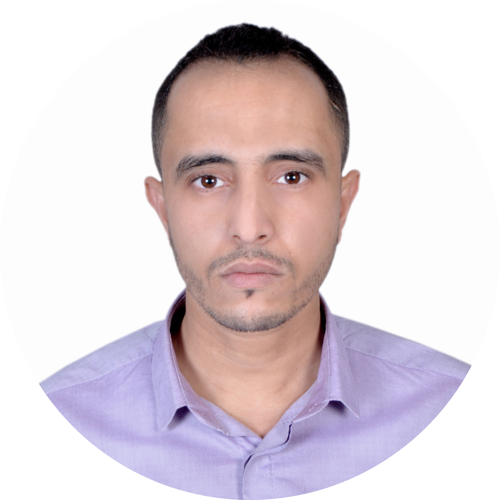

|  |
High School Teacher at Moulay Idriss I High School and President of the Moroccan Association of Robotics ü§ñ. |
Rabii Hajoui |
Engaging High School Teacher with over seven years of experience. Proficient in English as a Second Language. Seeking to bring intelligent, enthusiastic solutions and ensuring that the use of ICT and Numeracy are parts of the teaching and learning experience of my students. |
| ✅2021: | World TESOL Academy LONDON, United Kingdom | |
|---|---|---|
| 120-Hour TESOL/TEFL Certificate. | ||
| ✅ 2017-2018: | Moroccan-Korean Training Center in ICT Rabat, Morocco | |
| CMCF Certificate. | ||
| ✅ 2016-2017: | University of Humanities Ain Chock CASABLANCA, Morocco | |
| BA degree: English Studies, Literature. | ||
| ✅ 2007-2009: | University of Humanities BENI MELLAL, Morocco | |
| MASTER degree in GEOGRAPHY Urbanization and Urban Planning. |
||
| ✅ 2006-2007: | Multidisciplinary college KHOURIBGA, Morocco | |
| BA degree: GEOGRAPHY. | ||
| ✅ 2002-2003: | Higher School of Applied Informatics CASABLANCA, Morocco | |
| Higher Technician Diploma in Applied Computer Science. | ||
| Communication | ⭐⭐⭐⭐⭐ | Customer service | ⭐⭐⭐⭐⭐ |
| Problem-solving | ⭐⭐⭐⭐⭐ | Time management | ⭐⭐⭐⭐⭐ |
| Leadership | ⭐⭐⭐⭐⭐ |